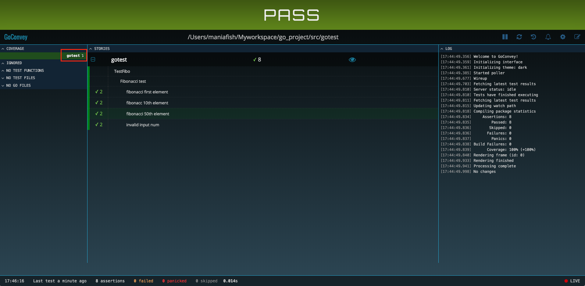
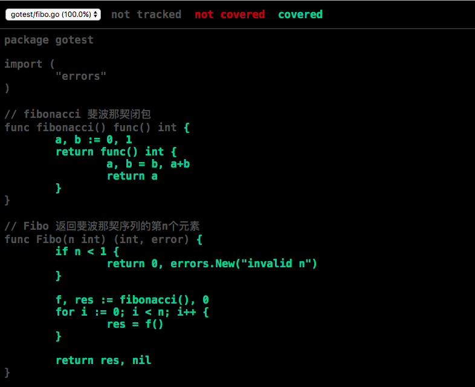

Go程序基准测试
golang自带了程序单元测试工具go test，可以用来做程序的单元测试和性能测试，简单的使用教程可以参考: golang 编写测试用例
1. 高效优雅地编写测试用例
这里推荐一个用于编写golang测试用例的第三方库：goconvey。
goconvey是一款针对Golang的测试框架，可以管理和运行测试用例，同时提供了丰富的断言函数，并支持很多 Web 界面特性。
1.1. goconvey实践
- 通过
go get github.com/smartystreets/goconvey即可完成安装 一个简单的狄波拉契序列的栗子，源码
fibo.go如下package gotest import ( "errors" ) // fibonacci 斐波那契闭包 func fibonacci() func() int { a, b := 0, 1 return func() int { a, b = b, a+b return a } } // Fibo 返回斐波那契序列的第n个元素 func Fibo(n int) (int, error) { if n < 1 { return 0, errors.New("invalid n") } f, res := fibonacci(), 0 for i := 0; i < n; i++ { res = f() } return res, nil }测试代码
fibo_test.go如下package gotest import ( "testing" . "github.com/smartystreets/goconvey/convey" ) func TestFibo(t *testing.T) { Convey("Fibonacci test\n", t, func() { Convey("fibonacci first element\n", func() { res, err := Fibo(1) So(res, ShouldEqual, 1) So(err, ShouldBeNil) }) Convey("fibonacc 10th element\n", func() { res, err := Fibo(10) So(res, ShouldEqual, 55) So(err, ShouldBeNil) }) Convey("fibonacci 50th element\n", func() { res, err := Fibo(50) So(res, ShouldEqual, 12586269025) So(err, ShouldBeNil) }) Convey("invalid input num\n", func() { _, err := Fibo(0) So(err, ShouldNotBeNil) _, err = Fibo(-1) So(err, ShouldNotBeNil) }) }) }在项目目录下执行
goconvey，会在页面输出测试结果
- 可以看到，这里有四个测试用例，每个用例有两个断言，断言成功会打勾(错误会打叉)；所有断言成功执行则测试用例“pass”
- goconvey提供的断言名称都十分直观，比如"ShouldBeNil", "ShouldNotEqual"等，完整的断言定义可以参考assertions.go
- 这个页面在执行
goconvey命令后会自动弹出，也可以通过http://127.0.0.1:8080/访问到 红框标识的部分是本次单元测试的包，点击可以看到这个包内代码的覆盖率情况，显示页面如下

2. Go基准测试选项
推荐的golang基准测试指令:
go test -bench="BenchmarkLogger" -benchtime=3s -run=none -count=5 -cpuprofile=cpu.prof
-bench: 执行哪些基准测试方法
- 这里是执行所有匹配了"BenchmarkLogger"的基准测试方法
- 如果希望执行包内所有的基准测试方法，则设置
-bench=.即可 - 支持正则表达式，如
^BenchmarkLogger$，就能唯一定位到BenchmarkLogger方法
-benchtime: 执行每个基准测试方法的时间，默认为1s，一般不超过3s
- -count: 执行几次基准测试
-run: 执行哪些单元测试用例
-run=none表示只执行基准测试，不执行单元测试用例
-cpuprofile: 生成用于做性能分析的cpu profile文件，具体分析方法可以参考: Go代码调优利器pprof + go-torch